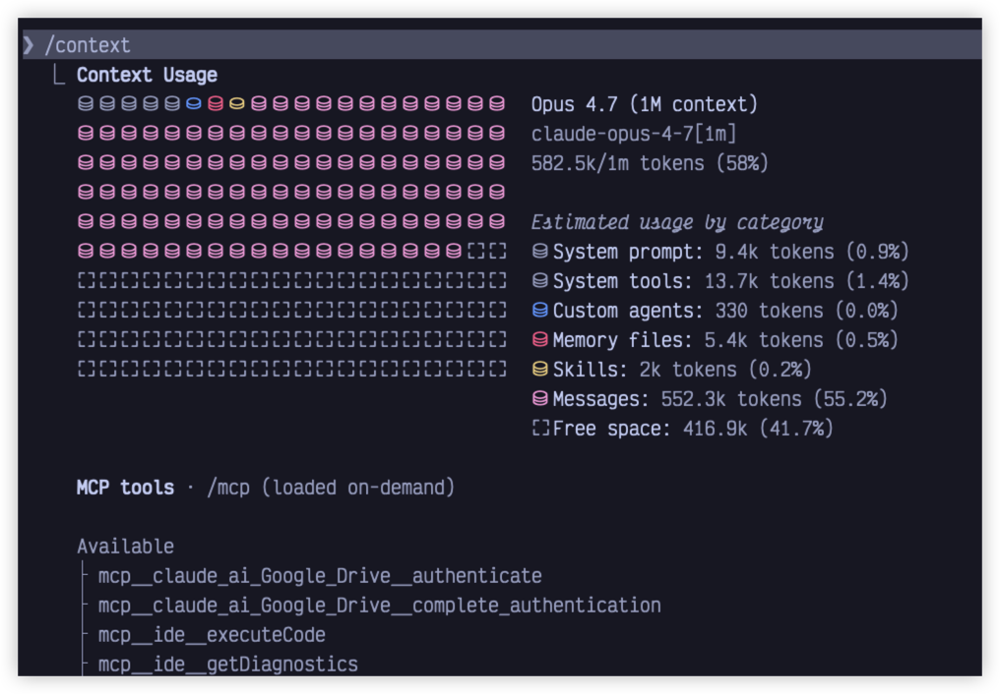
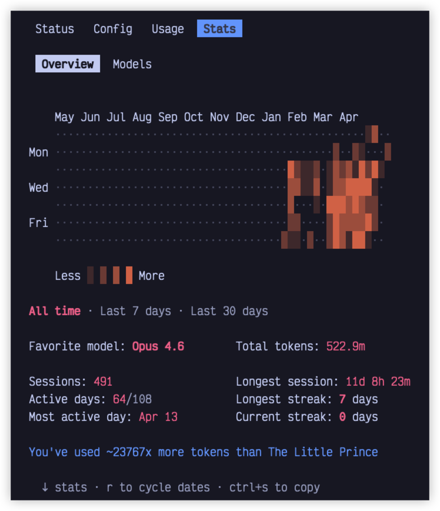

参考来源与版本锚定
本页正文整理自社区文章，由本站按专题模板重新编排，用于补充 topic-cc-unpacked-zh.html 中「04 · 斜杠命令目录」的详细使用场景。
原文作者：叶小钗（微信公众号） · 原文链接 ↗
技术权威：以本仓库 ccsource/claude-code-main 与本站 Source Map 源码课（S01–S12 / D01–D12）为准；你本机安装的官方 CLI 版本可能与本镜像不一致，请结合 发版监督 核对。
命令是什么
在 Claude Code 里，并不是所有 /命令 都是一回事。简单归类，大致可以分为 3 类：
| 类别 | 作用 | 典型命令 |
|---|---|---|
| 基础控制命令 | 处理会话、上下文、模型、权限等基础能力 | /clear、/compact、/model、/status |
| 场景化能力命令 | 把某类任务封装成入口，接近完整流程 | /debug、/doctor、/review |
| 扩展能力命令 | 连接更大的扩展机制，把能力沉淀下来 | /memory、/skills、/agents、/hooks、/MCP、/schedule |
记住：命令不是记得越多越有用，关键是先把它们各自是干什么的、适合在什么场景下用搞清楚。
第一类：会话与上下文管理命令
会话与上下文管理是最重要的命令。很多人觉得 Claude Code 越用越慢、越用越乱，第一反应往往是模型不行了，但更多时候是因为会话没有管好。
/clear：彻底清空，重新开始
适用场景：当前任务已彻底结束，准备开始新话题；会话明显跑偏，继续救的价值不大；上下文混进太多无关信息。
注意：适合「重开一局」，不适合日常整理。前面已建立的任务背景、约束条件会一起清掉。
/compact：压缩上下文
适用场景：任务还没做完但对话已很长；中间试了很多方案，想保留结论、丢掉过程噪音；需要继续当前任务但上下文开始变重。
核心原则：大多数人 /compact 应该比 /clear 更高频。它不是「重开」，而是「保留主线，清理包袱」。
/context：决定要不要收拾
以可视化方式查看当前上下文使用情况，提示哪些内容可能过重。先知道状态，再决定是继续聊、/compact 还是 /clear。
/resume：上次没做完的
通过会话 ID、名称或选择器恢复之前的会话。适合「任务主线没变，只是中间暂停过」的情况。
/rewind：不满意就往前退
将会话或代码状态回退到之前的节点，从更合适的位置重新继续，而不是全盘推倒重来。
/recap：先收个口，再继续
按需生成当前会话的一句话摘要。适合长任务的阶段节点上，把当前进度和关键点收一下，再决定下一步。

这组命令到底该怎么用
- 一觉得不顺就
/clear是粗暴的，先判断是「该重开」还是「该瘦身」。 /compact、/context、/recap解决的是「怎么把当前这局打得更顺」，不是「开新局」。- 如果你还是一条会话从头聊到尾，或者一乱就
/clear，这组命令值得尽快熟悉。
第二类：模型、推理强度与成本相关命令
这组命令解决的是：这件事，到底该让 Claude Code 用什么状态来做。核心原则：不是所有任务都值得高配。
/model：先判断任务类型
选择或切换当前使用的 AI 模型。先问自己：这个任务是执行型任务，还是判断型任务？
- 执行型（改代码、修 bug、调样式）：优先考虑效率，不需要最强分析能力。
- 判断型（陌生项目排查、方案比较、链路梳理）：模型能力明显重要，值得高配。
/effort：任务明确就收低，复杂再往上拨
设置模型的推理强度。很多人的直觉是默认开高一点，至少不亏——实际不是这样。
- 收低：目标明确，只需执行（如加表单校验、改按钮文案）。
- 往上拨：需求有歧义、多方案比较、链路长、问题来源不明确。
/status：确认当前状态
查看版本、模型、账号、连接状态。觉得「今天表现和预期不一样」时，先 /status，不要全靠猜。
/cost：建立成本意识
查看会话成本、计划用量和活动统计。不是用来焦虑的，是用来建立成本感的：哪些任务值得高配，哪些是在「高射炮打蚊子」。
/stats：看结构
使用情况面板。重点看五个方向：
- 总成本：建立大概的成本感。
- Token 使用情况：长上下文、会话太重会不断放大 Token。
- 时间维度：API 耗时 vs 真实使用时长，判断是模型慢还是被打断太多。
- 代码改动量：花了不少成本但改动少，说明消耗在「理解、分析、试错」上。
- 活动分布：是否大量时间花在简单修改上却一直沿用高 effort。

第三类：权限、安全与排障相关命令
这组命令解决的是：为什么它明明看起来该能做这件事，但就是没做成。最常见的不适感不是回答不够聪明，而是权限没配好、环境没打通、执行边界没设清楚。
权限相关能力模型
| 能力 | 解决的问题 | 简单理解 |
|---|---|---|
/permissions | 哪些能做、哪些要问、哪些禁止 | 权限规则 |
/auto mode | 哪些调用可以自动放行 | 自动审批 |
/sandbox | 即使执行，也只能在边界内执行 | 执行隔离 |
/fewer-permission-prompts | 找出低风险高频确认，生成 allowlist | 权限优化 |
/doctor 与 /debug
诊断命令。当 Claude Code 表现异常、命令或工具无法使用时，先看诊断输出，而不是直接换 prompt 或重启。
/security-review
安全审查入口。适合在配置了 hooks、agents、MCP 等扩展后，做一次安全边界检查。
核心原则总结
- 会话管理：优先
/compact而非/clear；先看/context再决定。 - 模型与成本：执行型任务优先效率，判断型任务再考虑高配；定期看
/cost和/stats。 - 权限安全：表现异常时先诊断，不是模型问题而是配置问题。
- 最终原则：命令不是记得越多越好，关键是知道什么时候用、为什么用。
延伸阅读
Claude Code 解构 → · S04 · 命令与工具使用 · D04 · 命令与工具深挖 · 原文：Claude Code 命令使用指南（叶小钗）↗